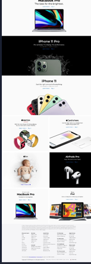
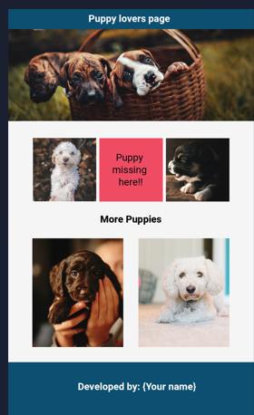

1. Apple Website Project

I created an Apple-inspired website using HTML, CSS
and a little JavaScript.
This project helped me practice webpage structure,
styling and basic interactivity.
Technologies used: HTML, CSS and JavaScript.
How I built it
- Planned the structure of the website.
- Created the webpage using HTML.
- Added styling using CSS.
- Used JavaScript for basic interactivity.
- Tested the website in the browser.
Watch My Project Demo
2. Puppy Page Project

I developed a puppy-themed webpage using HTML and CSS.
Through this project, I practiced HTML elements, colors,
fonts, spacing and webpage layout.
Technologies used: HTML and CSS.
How I built it
- Planned the webpage structure.
- Added puppy-related content using HTML.
- Used CSS to style the webpage.
- Tested the page in the browser.
3. My First C++ Program
This is a simple C++ program that displays
Hello, World! on the screen.
#include <iostream>
using namespace std;
int main() {
cout << "Hello, World!";
return 0;
}
How I built it
- Included the iostream library.
- Created the main function.
- Used cout to display Hello, World!
- Returned 0 to finish the program.